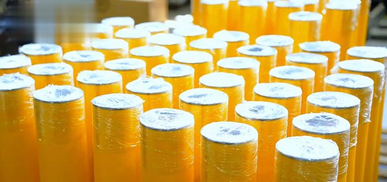
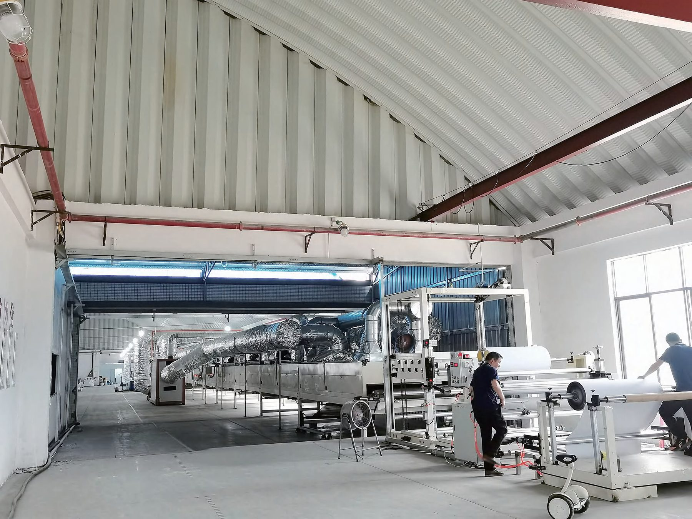
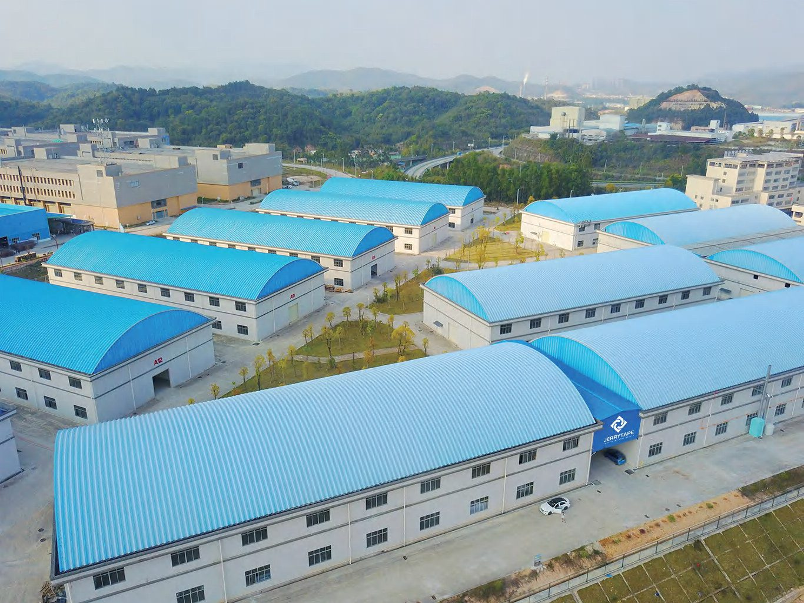

Xuống xưởng trước. Đề xuất sau.
Thiên Khôi làm đá trắng Yên Bái. Giờ chúng tôi làm thêm một việc khác hẳn: giữ cho người trong nhà máy, kho ở KCN miền Bắc không bị xe nâng đâm, kệ đè hay trượt ngã.
Bốn điều giữ trong mọi lần khảo sát.
Đứng cạnh đường xe
Xem luồng xe, luồng người đúng lúc ca đang chạy. Không đoán từ bản vẽ.
Nói đúng mức cần
Chỗ nào chỉ cần kẻ lại vạch, chúng tôi nói kẻ vạch. Chỗ nào phải rào, chúng tôi nói rào.
Làm trước chỗ gấp
Chia theo đợt. Không bắt dừng cả khu vực để làm một lần.
Nói rõ giới hạn
Sản phẩm nào cũng có mức chịu. Chúng tôi nói trước, không hứa "tuyệt đối an toàn".
Lê Huy Vương
Giám đốc Kinh doanh Miền Bắc. Trực tiếp lo mảng an toàn nhà xưởng.
Anh chị lo HSE, kho, nhà xưởng ở phía Bắc, cứ gọi hoặc nhắn Zalo. Anh Vương xuống tận nơi.

Quét mã để nhắn Zalo. Gửi kèm ảnh vị trí cần xử lý.
Sản phẩm từ nhà máy của hãng
Thiên Khôi cung cấp và lắp đặt rào chắn polymer, băng an toàn cho nhà máy, kho ở miền Bắc. Hàng lấy từ nhà máy chuyên sản xuất.

Ảnh: nhà sản xuấtRào chắn polymer
Rào xe nâng, rào lối đi bộ, bảo vệ cột, ốp chân kệ, chặn bánh xe, cổng.
Xem rào chắn
Ảnh: nhà sản xuấtBăng an toàn
Xem băng dán sàn
Ảnh: nhà sản xuấtHàng mẫu xem tận tay
Tại kho Hà Nội.
Thông tin pháp nhân
Công ty TNHH XNK Khoáng Sản Thiên Khôi
THIEN KHOI MINERAL XNK COMPANY LIMITED
0110550912
Tầng 1, Toà nhà Hanhud, Phố Tôn Quang Phiệt, Phường Nghĩa Đô, Hà Nội
Thiên Khôi, Giải Pháp An Toàn
Theo danh thiếp của anh Lê Huy Vương (28/10/2026) và đăng ký kinh doanh.
Từ tấm ảnh đầu tiên tới đoạn rào cuối cùng
Thiên Khôi, Giải Pháp An Toàn làm theo một trình tự cố định: xem ảnh, xuống kho, đề xuất theo từng khu, lắp theo đợt. Từ đầu tới cuối, anh chị làm việc với một đầu mối.
Năm bước từ khảo sát tới lắp
Mỗi bước làm một việc, nên anh chị biết việc đang ở bước nào.
- Xem ảnh: anh chị gửi ảnh chỗ hay va, hay trơn qua trang đặt khảo sát hoặc Zalo. Chúng tôi gọi lại hỏi thêm về loại xe, giờ đông, nền sàn.
- Khảo sát tại chỗ: đi theo luồng hàng đúng giờ ca đang chạy, đo từng đoạn, xem vết va cũ và nền sàn.
- Đề xuất theo khu: chỗ nào làm trước, chỗ nào chia đợt sau, chỗ nào chỉ cần kẻ vạch. Anh chị chọn làm phần nào trước.
- Lắp theo đợt: quây đoạn đang làm, báo trước để tài xế ca đó đi vòng. Không bắt dừng cả khu.
- Bàn giao: chỉ cho đội kho cách vệ sinh rào, kiểm bu lông và khớp nối theo hướng dẫn bảo trì của nhà sản xuất, và cách xem mép băng sau một thời gian dùng.
Sau khi lắp xong
Rào bị xe va hỏng thì thay chi tiết hỏng theo hướng dẫn của nhà sản xuất, không thay cả đoạn. Anh chị chụp ảnh điểm va, chân đế, mối nối rồi nhắn Zalo để đặt đúng chi tiết. Một chỗ bị va nhiều lần thì ngoài thay rào, nên xem lại luồng xe ở khu đó. Kho đổi bố trí thì gọi lại để bàn chuyện dời rào, kẻ lại vạch.
Khu vực phục vụ
Thiên Khôi khảo sát và lắp đặt cho nhà máy, kho ở Hà Nội và các tỉnh phía Bắc. Kho ở xa hơn thì gửi ảnh trước. Chúng tôi xem ảnh, gợi ý ban đầu, rồi trao đổi cách làm hợp với vị trí kho.
Một đầu mối: anh Lê Huy Vương
Anh Lê Huy Vương, Giám đốc Kinh doanh Miền Bắc, phụ trách mảng an toàn nhà xưởng. Từ cuộc gọi đầu, qua buổi khảo sát, tới khi lắp xong, anh chị chỉ làm việc với một người. Chuyện kho không phải kể lại cho ai khác. Gọi hoặc nhắn Zalo 0948 922 368, email huyvuongbs@gmail.com.
Pháp nhân và mã số thuế
Thiên Khôi, Giải Pháp An Toàn là thương hiệu mảng an toàn nhà xưởng của Công ty TNHH XNK Khoáng Sản Thiên Khôi, mã số thuế 0110550912, văn phòng ở Tầng 1, Toà nhà Hanhud, Phố Tôn Quang Phiệt, Phường Nghĩa Đô, Hà Nội. Phòng mua hàng tra được pháp nhân này bằng mã số thuế trước khi làm việc.
Thiên Khôi vốn làm đá hoa trắng Yên Bái. Mảng an toàn là việc khác hẳn, nên có thương hiệu và trang web riêng, chỉ dùng chung pháp nhân. Muốn xem trước hai dòng sản phẩm, vào trang sản phẩm. Muốn tự kiểm kho trước khi gọi, dùng checklist 10 điểm.
Thiên Khôi làm đá hoa trắng, mảng an toàn có liên quan gì không?
Thiên Khôi vốn làm đá hoa trắng Yên Bái. Mảng an toàn nhà xưởng là việc khác hẳn, có thương hiệu riêng là Thiên Khôi, Giải Pháp An Toàn, trang web riêng và người phụ trách riêng là anh Lê Huy Vương. Hai mảng chỉ dùng chung pháp nhân. Mảng này làm gì, xem trang tin hoặc trang sản phẩm.
Thiên Khôi có tự sản xuất rào chắn và băng dán sàn không?
Không. Rào chắn polymer và băng dán sàn do nhà máy chuyên sản xuất làm ra. Thiên Khôi khảo sát, đề xuất, cung cấp và lắp đặt cho nhà máy, kho ở miền Bắc. Ảnh và video sản phẩm trên web do nhà sản xuất cung cấp và có ghi nguồn. Xem video thử để thấy rào nhận cú va ra sao.
Làm việc với Thiên Khôi thì ai là người liên hệ?
Anh Lê Huy Vương, Giám đốc Kinh doanh Miền Bắc, là đầu mối từ cuộc gọi đầu tới khi lắp xong. Gọi hoặc nhắn Zalo 0948 922 368, email huyvuongbs@gmail.com. Gửi kèm ảnh vị trí qua trang đặt khảo sát thì ngay cuộc gọi đầu đã có cái để bàn.
Làm sao kiểm tra Thiên Khôi là doanh nghiệp thật?
Tra mã số thuế 0110550912 trên trang tra cứu thông tin doanh nghiệp của cơ quan nhà nước, tên pháp nhân là Công ty TNHH XNK Khoáng Sản Thiên Khôi. Văn phòng ở Tầng 1, Toà nhà Hanhud, Phố Tôn Quang Phiệt, Phường Nghĩa Đô, Hà Nội. Thông tin pháp nhân in ở cuối mọi trang của web và ở trang liên hệ.